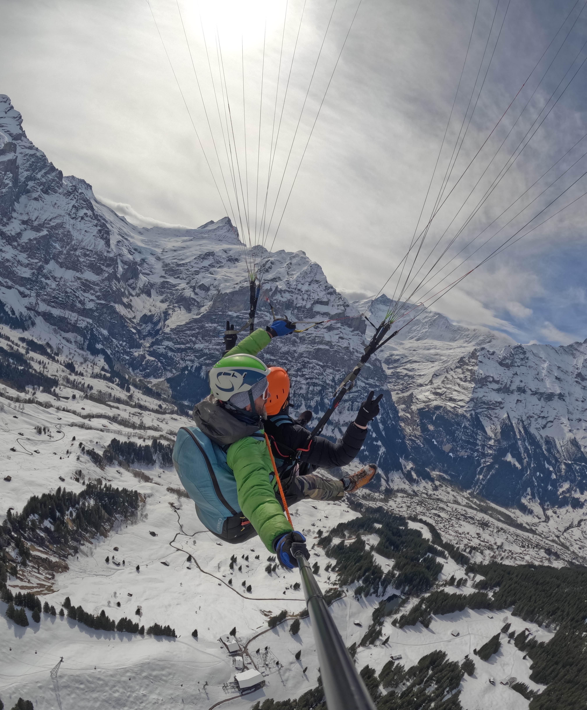
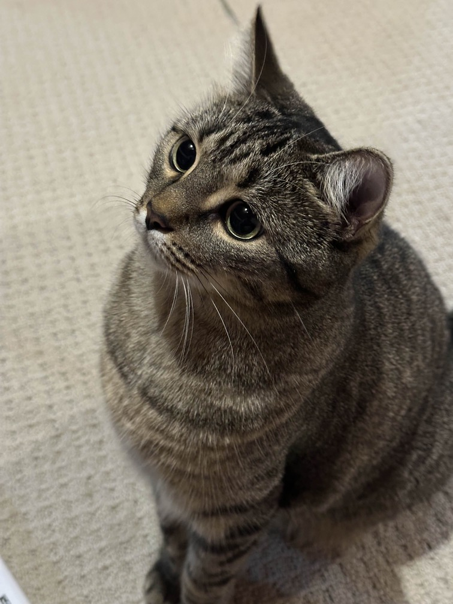
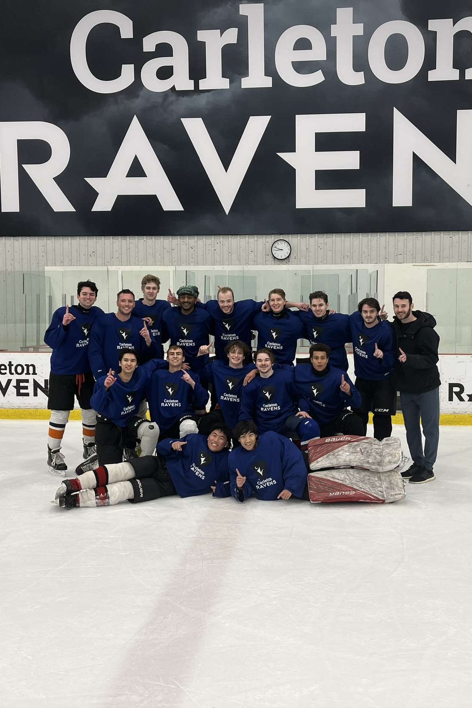
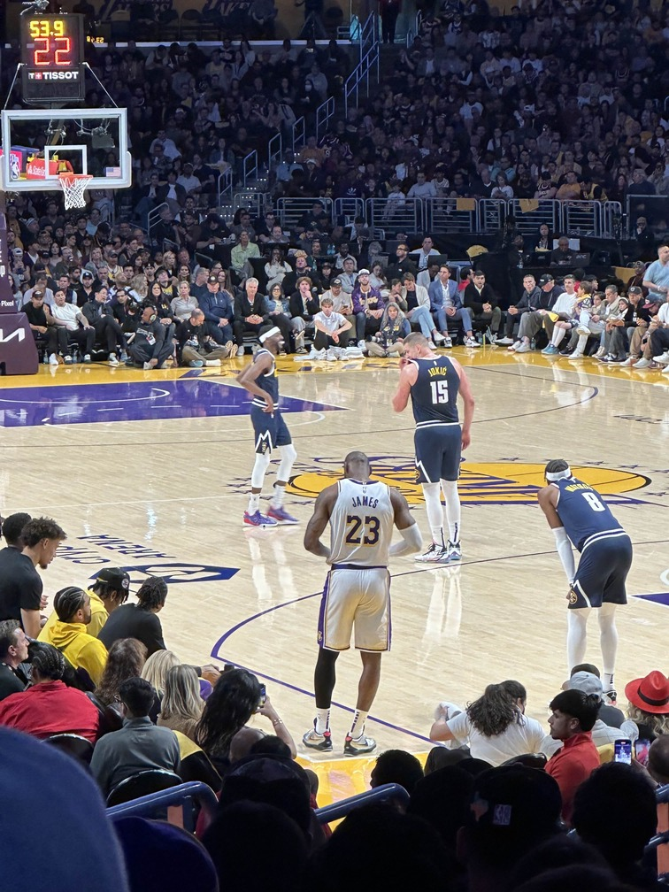

02 / The path so far
Professional Journey
Software Engineer Intern
Integrated web search and five research skills into Sidekick Pulse, Shopify's AI commerce researcher, improving recommendation click-through by 8%. Built multi-query batching, multilingual safeguards, and feedback pipelines to improve efficiency, reliability, and reach.
Infrastructure Engineer Intern
Built Ruby tooling and agentic incident response systems for the enterprise SRE team, accelerating incident resolution and improving system observability.
Software Engineer in Test
Worked on the RLS Integration testing team. Developed automated tools to improve test analysis, and conducted hardening tests to discover and diagnose issues on the product.
Software Engineer Intern
Worked on the RLS performance and automation team. Developed automated tools and enhanced system performance monitoring.
Software Developer Intern
Contributed with mainly front-end work and backend testing. Designed UI/UX and developed ShellTOC Help Center.
03 / Selected work
Things I’ve built
Omni Recs
An AI-powered, location-based recommendation system using Python, Flask, and Kafka. Integrates LLMs and MapBox API for real-time suggestions.
Art Gallery Platform
Full-stack art-sharing platform for artists. Built with Node.js, Express, and MongoDB, featuring a RESTful API and a responsive UI using Pug.
Dango E-Commerce Store
A modern Japanese dessert e-commerce store built with React. Features a clean UI/UX designed in Figma, with real-time cart updates and seamless checkout.
Fermet - AI Tutoring Service
An AI tutoring platform built with Python, PydanticAI, Next.js, and MCP. Features deterministic session orchestration, adaptive learning activities, and an LLM-as-a-Judge evaluation framework.
02 / The personal collection
Life beyond the screen




